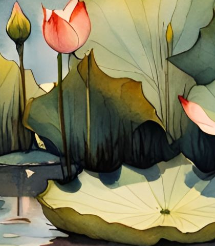

You picked Instrument Serif italic — one honest thing first: it only exists as a single weight, there's no real bold cut to switch to. Here are three ways to get more weight anyway; the last one is a different, genuinely bold typeface, in case none of the fakes feel right.
A — as is (Instrument Serif, regular italic)
Mónica Arcila
B — browser "faux bold" (font-weight: 700 on a font with no bold — the browser fattens it algorithmically)
Mónica Arcila
C — outlined stroke added to the regular weight (a cleaner fake than B, no distortion)
Mónica Arcila
D — Fraunces at its heaviest weight, italic (a real bold, different typeface)
Mónica Arcila
Tell me A, B, C or D (or "none of these"), and I'll set it as --font-display in the real styles.css.
2 · Cut-out test — your globe charm, background removed
Example project title
This is what a real transparent cut-out looks like peeking out of a glass card, instead of the plain CSS bezel.
This is your globe/charm image with its white background removed — a stand-in to test the mechanic, not a real project image. Once you send a cut-out per project, it drops in exactly like this.
3 · Lotus toggle test — hover or click once to open, again to close

Closed by default. The first hover or click opens it and it stays open — the next hover or click closes it again. Always starts closed on reload (nothing is saved), like you asked. Note: the two images here are deliberately mismatched (a watercolour bud cropped from your pond image, and your glowing 3D lotus) just to prove the toggle works — send a matched closed + open pair of the same flower for the real version.
4 · Navigation sketch A — growth trail
Bloomed (visited)CurrentNot grown yet — still clickable
The buds double as the lotus reference without naming it outright — the shape is the same closed-bud silhouette as the hover test above.
5 · Navigation sketch B — portal paging
You are hereResearch
Hero
Skills
About
Projects
Click any circle to step straight into that scene. Plain next/previous arrows would still sit underneath for a fully linear fallback.